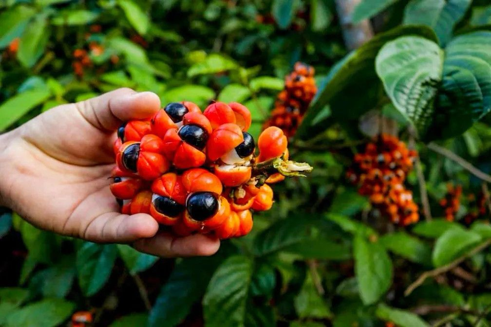

AMBEV • GUARANÁ ANTARCTICA
Do campo ao consumidor
Site acadêmico com a organização do trabalho em três frentes: cadeia produtiva, cadeia de suprimentos e cadeia de valor.
Trabalho acadêmico • Engenharia de Gestão

Cadeias
Análise integrada da cadeia produtiva, suprimentos e valor com navegação por abas.
Abrir páginaEtapa 02 - Beer Game
Simulação educacional e análise do efeito chicote na gestão de suprimentos.
Abrir páginaReferências
Fontes institucionais, setoriais e referencial teórico (Porter, SCM, etc.).
Abrir páginaSobre o Trabalho
Estudo acadêmico do curso de Engenharia de Gestão sobre a cadeia de suprimentos do Guaraná Antarctica.
Saiba mais